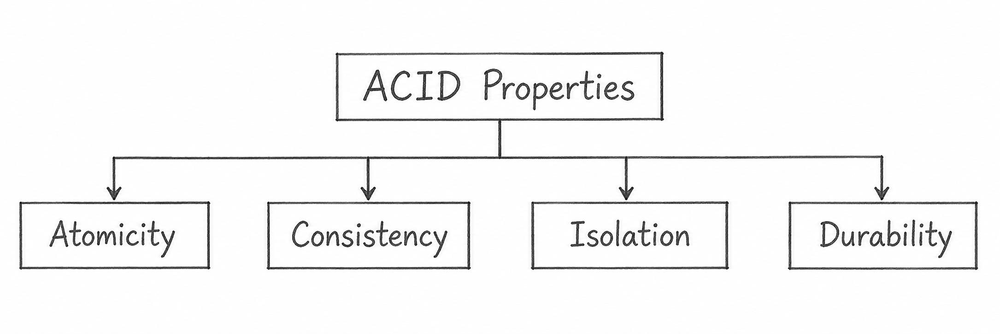

Q18. State the ACID Properties of a Transaction with Suitable Examples.
ACID Properties are four important properties of a database transaction that ensure data remains correct and reliable.
ACID stands for Atomicity, Consistency, Isolation, and Durability.

1. Atomicity
Atomicity means either all operations of a transaction are completed, or none of them are performed.
Example: Rahul transfers ₹2,000 from Account A to Account B.
- ₹2,000 is deducted from Account A.
- ₹2,000 is added to Account B.
- If the second operation fails, the first operation is also cancelled.
2. Consistency
Consistency means a transaction must follow all database rules and maintain data correctness.
Example: A bank account has ₹5,000, and the bank does not allow a negative balance.
- A customer tries to withdraw ₹6,000.
- The transaction violates the bank's balance rule.
- Therefore, the transaction is rejected, and the balance remains ₹5,000.
3. Isolation
Isolation means multiple transactions can execute at the same time without interfering with each other's incomplete changes.
Example: Account A has ₹10,000.
- Transaction T1 withdraws ₹2,000.
- Transaction T2 withdraws ₹3,000 at the same time.
- The database ensures both transactions are handled correctly without interfering with each other.
Final balance = ₹5,000.
4. Durability
Durability means once a transaction is committed, its changes remain permanently saved in the database.
Example: Rahul transfers ₹2,000 from Account A to Account B.
- The transfer is completed and committed.
- Immediately afterward, the system crashes.
- When the system restarts, the updated balances are still saved in the database.